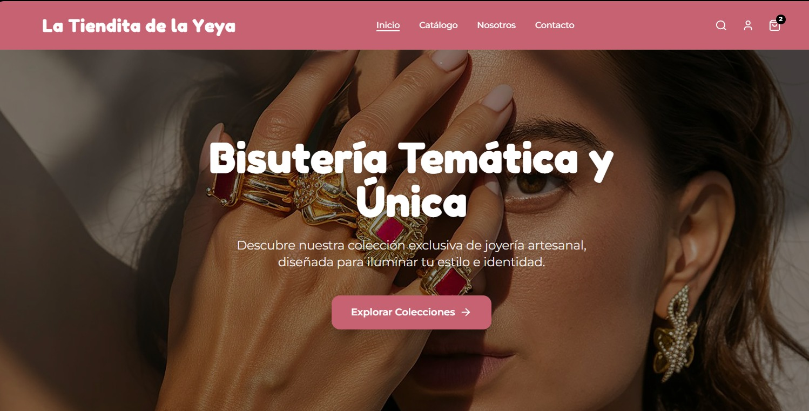

✦ Java Full Stack Developer & HR Tech
Creando software limpio centrado en la experiencia humana
Diseño soluciones tecnológicas que entienden la psicología detrás del usuario final, optimizando procesos de negocio e impulsando la inclusión digital.
Portafolio
Selección de proyectos destacados. Desde maquetación frontend inspiracional hasta la arquitectura backend para comercio electrónico inclusivo.
Tecnología con identidad y propósito
Mi viaje comenzó en la psicología organizacional y People Analytics, donde entendí que la tecnología es la herramienta más poderosa para crear espacios inclusivos y escalar el impacto en las personas.
Al dar el salto al desarrollo Java Full Stack, descubrí cómo el código puede resolver problemas reales de negocio y, al mismo tiempo, conectar con las comunidades. Proyectos como La Tiendita de la Yeya y la Tienda Deportiva Adelitas reflejan mi visión: construir software que no solo sea técnicamente robusto, sino que empodere a sus usuarias, ofrezca accesibilidad y cuente una narrativa con significado.
Fuera de la consola de código, la fotografía me enseñó a observar los detalles y la luz, una mirada atenta que hoy aplico al diseñar interfaces limpias, intuitivas y centradas genuinamente en el ser humano.
Trayectoria
Un camino recorrido entre la analítica de datos, el talento humano y la ingeniería de software.
📂 Experiencia
2026 - Actualidad
Java Full Stack Developer Trainee
Generation México
Desarrollo End-to-End de plataformas web E-Commerce, construyendo APIs REST en Java/Spring Boot e interfaces dinámicas con JavaScript.
2025
Analista de Productividad y Talento Jr.
Intercam Banco
Diseño de dashboards analíticos y automatización del flujo de Onboarding reduciendo tiempos operativos de procesamiento en un 50%.
2023
Consultora de Business Analytics
McCormick (Proyecto Académico)
Implementación de modelos de Forecasting para predicción de ventas mediante análisis estadístico masivo (sell-in/sell-out).
🎓 Educación
2026
Bootcamp Desarrollador Java Full Stack
Generation México
Más de 500 horas de entrenamiento intensivo en Java, MySQL, HTML5/CSS3, JavaScript, Git/GitHub y metodologías ágiles (Scrum).
2020 - 2024
Lic. en Desarrollo de Talento y Cultura
Tec de Monterrey
Especialización en Analítica para los Negocios. Enfoque en People Analytics, comportamiento organizacional e inclusión.
Blog
Reflexiones sobre código, datos y el impacto en las personas.

Desarrollo & Cultura
De entender equipos a construir sistemas
Cómo mi formación en psicología organizacional me dio una perspectiva inclusiva y enfocada en el usuario para resolver problemas mediante el desarrollo Full Stack.
Leer artículo →Hablemos de tu próximo proyecto
¿Buscas una desarrolladora con visión de negocio, empatía por el usuario y capacidad técnica? Mi bandeja de entrada está abierta.
✉️ joymar.zub@gmail.com